공간정보와 3D
3차원 공간정보
1. 3차원 공간정보의 개념
-
공간정보(Geospatial Information) 개념
- 지상, 지하, 수상, 수중 등 공간 상에 존재하는 자연 또는 인공적인 객체에 대한 위치정보 및 이와 관련된 공간적 인지와 의사결정에 필요한 정보(공간정보산업 진흥법)
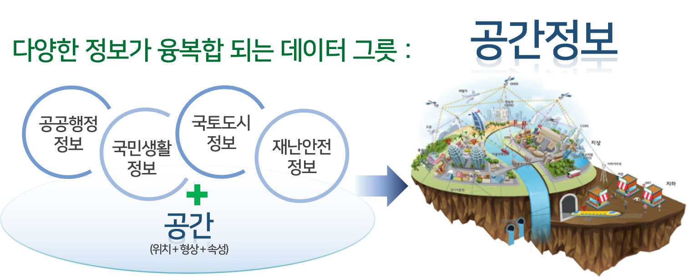
- 지상, 지하, 수상, 수중 등 공간 상에 존재하는 자연 또는 인공적인 객체에 대한 위치정보 및 이와 관련된 공간적 인지와 의사결정에 필요한 정보(공간정보산업 진흥법)
-
2차원 공간정보의 한계
- 지적도, 수치지형도, 도로망은 대부분 x, y 평면 위에 표현되지만 현실은 다음과 같은 문제가 있음
-
건물의 높이 · 층수, 지하 공간, 육교 · 고가도로의 겹침을 표현하기 어려움
-
일조 · 조망 · 그림자 · 침수 같은 분석은 높이 정보가 없으면 불가능
-
비전문가가 지도를 보고 직관적으로 이해하기 어려움
-
- 지적도, 수치지형도, 도로망은 대부분 x, y 평면 위에 표현되지만 현실은 다음과 같은 문제가 있음
-
3차원 공간정보 개념
-
2차원의 공간정보에 높이(심도) · 영상 · 속성 정보를 추가하여 현실세계와 동일한 입체감과 질감을 가지도록 표현한 지리정보

-
2차원 공간정보는 현실세계에 대해 점 · 선 · 면의 2차원 객체로 일반화함으로써 데이터 손실이 발생하여 현실세계에 대한 이해와 분석에 한계
항목 2D 표현 3D 표현 좌표 X, Y X, Y, Z 건물 외곽선 외곽선과 높이·지붕 형상 도로 중심선 또는 면 폭 · 높이 · 경사 · 포장 구조 지형 등고선 · 표고점 · DEM 표면 메시 또는 높이장
-
2. 3차원 공간정보 활용
| 분야 | 예시 |
|---|---|
| 도시계획 | 경관 · 조망 분석, 일조권 검토, 스카이라인 시뮬레이션 |
| 방재 | 침수 시뮬레이션, 산사태 위험 지역 표현 |
| 건설 · 시설물 | BIM–GIS 연계, 지하 매설물 관리 |
| 스마트시티 · 디지털트윈 | 도시 전체의 3D 모델에 센서 데이터 연동 |
| 관광 · 문화재 | 3D 스캔한 문화재, 가상 투어 |
| 게임 · 메타버스 | 실제 도시를 닮은 가상 공간 |
-
LX플랫폼 개요
-
수요기관 독립 운영이 가능한 클라우드 인프라 및 개발환경 제공으로 차별화된 공간정보 기반 행정정보 활용 지원

-
-
LX 플랫폼 서비스 구성 현황

-
LX플랫폼 공통기능 시연
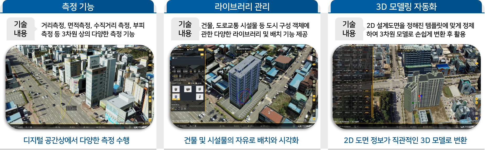
2. 3차원 공간정보 구축
-
3차원 공간정보 자료원
-
3차원 지형
- 항공레이저 촬영으로 현실세계 지형을 3차원으로 표현한 데이터
-
정사영상
- 3차원 공간정보에 활용되는 배경지도(항공사진 촬영을 통해 하늘에서 수직으로 촬영하여 제작한 영상)
-
3차원 입체모형
-
건물, 도로 등의 시설물을 정밀 모델링하여 현실 세계와 동일하게 구축한 데이터

-
-
-
3차원 공간정보 구축방법
-
항공사진 촬영
-
실감정사영상 제작 및 3차원 가시화 모델을 제작하기 위해 일정한 중복도로 동서남북을 교차해 촬영

-
-
항공레이저 측량
-
지표면의 높이값을 정밀 추출하기 위해 항공기에 라이다(LiDAR)를 부착하여 지형을 스캔, 3차원 지형데이터 정보(수치표고모형, Digital Elevation Model)를 취득
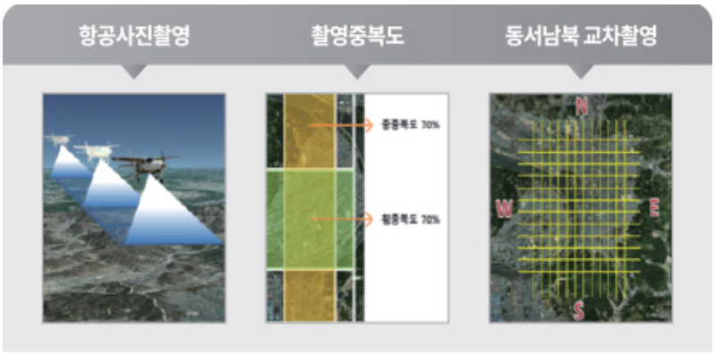
-
-
3차원 가시화 모델
-
항공사진 및 수치표고모형 성과에서 건물 등의 구조물에 대해 실제 형상과 같은 3차원 가시화 모델을 제작
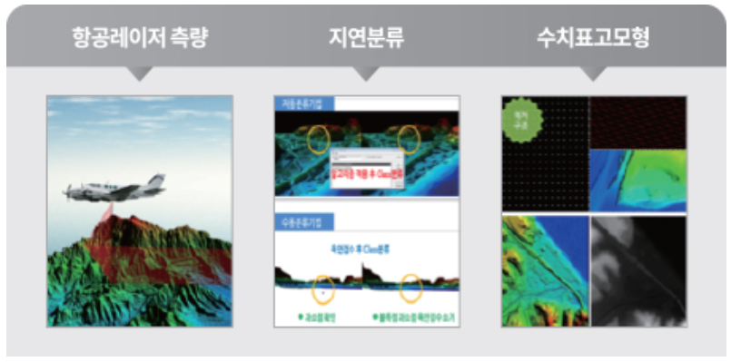
-
-
실감정사영상
-
수치표고모형과 3차원 가시화 모델을 이용하여 지형 및 건물 구조물의 오류를 모두 제거한 고정밀 영상지도 제작

-
-
3차원 공간정보 구축
-
자동영상매칭 S/W를 활용하여 자동으로 실감정사영상, 수치표면모형 및 3차원 가시화 모델 제작
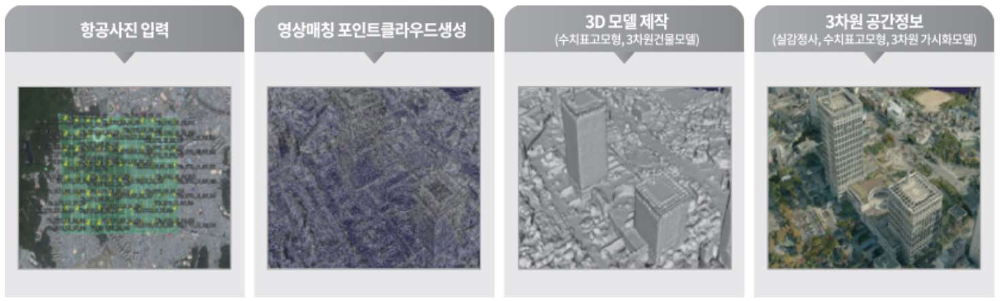
-
-
3. 공간정보의 기하 유형과 3D 객체
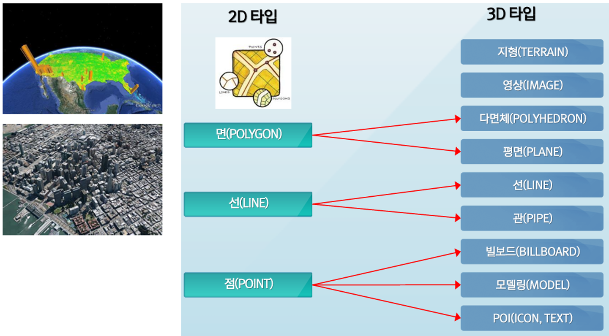
-
지형데이터
-
고도 값이 입력된 바이너리(shp, dem 등), 아스키(dsf, asc 등), 이미지 파일(tiff, img)을 토대로 3차원 지형데이터로 생성
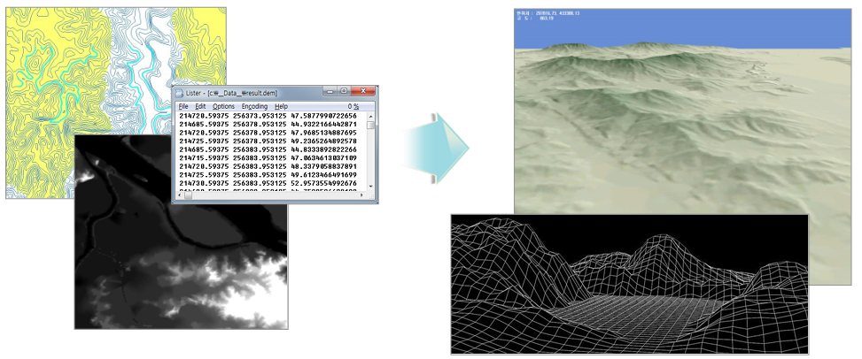
-
-
영상 데이터
-
RGB 밴드가 포함된 이미지 파일(tiff, img 등)을 토대로 3차원 지형데이터에 영상을 생성
-
주로 위성영상 혹은 항공사진을 이용하고, 생성의 개념보다는 지형에 덮어씌우는 개념
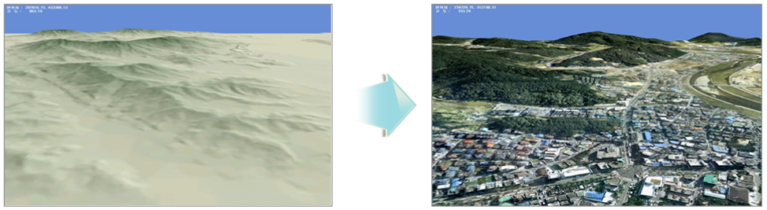
-
-
다면체 데이터
-
2차원의 폴리곤 데이터에 높이 값을 적용하여 다면체 데이터로 생성
-
수치지형도를 기반으로 건물데이터를 생성할 때 주로 사용

-
-
평면 데이터
-
2차원의 폴리곤 데이터에 높이 값을 적용하지 않고, 지형의 굴곡에 맞춰 표출
-
주로 도로, 인도 등의 높이가 없다고 판단되는 데이터 표출에 사용

-
-
라인 데이터
-
2차원의 라인 데이터를 높이 값을 지정하지 않고, 지형의 굴곡에 맞춰 표출
-
주로 경계선(행정경계 등) 데이터 표출에 사용

-
-
파이프 데이터
-
2차원의 라인 데이터에 두께 및 높이 값을 적용하여 파이프 형태의 데이터 표출
-
주로 지하시설물(상수관, 하수관 등) 데이터 표출에 사용
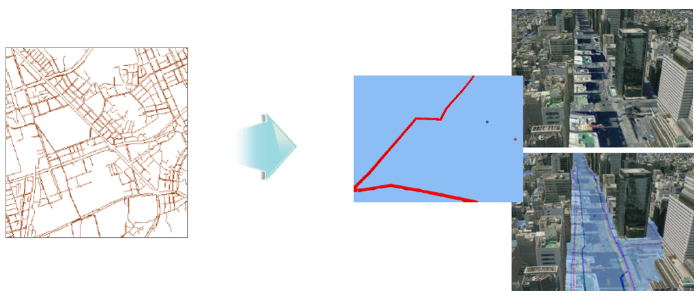
-
-
빌보드 데이터
-
2차원의 포인트 데이터를 기준으로 연속적으로 동일한 이미지를 적용하여 효출
-
주로 가로수 표현에 적용

-
-
모델링 데이터
-
그래픽 도구로 디테일하게 만든 모델링 데이터를 표출하는데 사용
-
랜드마크선 시설물(63빌딩, 남산타워 등)을 표출하는데 사용
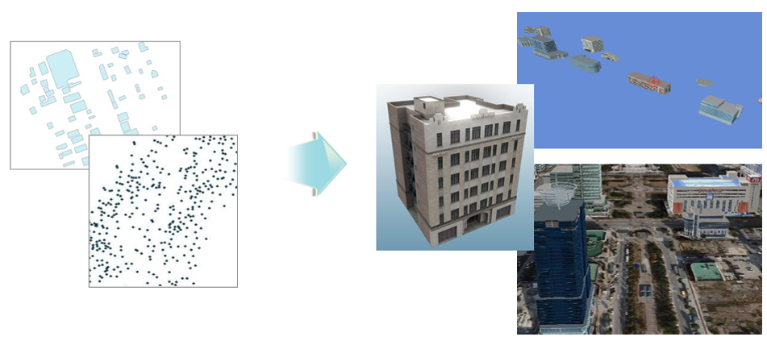
-
-
POI(Point of Interests)
-
2차원의 포인트 데이터를 기준으로 아이콘(이미지) 및 텍스트 표출
-
주로 명칭 표출에 사용

-
4. 3차원 데이터 표출기법
-
LOD(Level of Detail)
-
“멀리 있는 물체는 잘 보이지 않는다“는 생각을 바탕으로 개발된 모델로 3차원 GIS 데이터를 보다 효율적이고 빠른 속도로 가시화하기 위해 적용하는 기술
-
사용자 시점으로부터 거리에 따라 지형, 영상, 3차원 객체의 정밀도와 해상도를 단계적으로 표현하는 기술

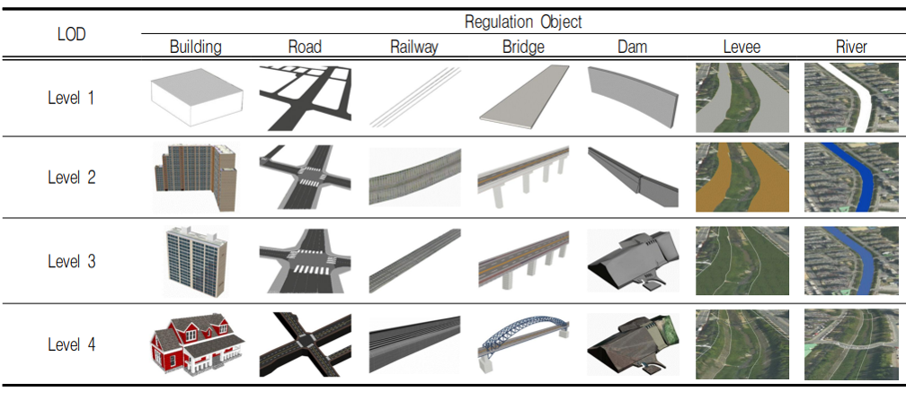
-
5. 3차원 데이터 저장형식
| 포맷 | 확장자 | 특징 | 용도 |
|---|---|---|---|
| glTF / GLB | .gltf / .glb | 웹용 표준, 용량 작음, 재질·텍스처·애니메이션 포함 (“3D의 JPEG”) | WebGIS, 웹 3D |
| OBJ | .obj (+.mtl) | 단순·범용, 텍스트 기반, 애니메이션 없음 | 교환 |
| FBX | .fbx | 애니메이션 포함, 게임 엔진 | Unity, Unreal |
| STL | .stl | 형상만(색·재질 없음) | 3D 프린팅 |
| Blender | .blend | Blender 원본(모든 정보 보존) | 작업 원본 |
| IFC | .ifc | BIM 표준 | 건축 |
| CityGML | .gml | 속성 + 구조 가진 도시 모델 국제 표준 | 공간정보 |
| 3D Tiles | tileset.json + .b3dm/.glb | Cesium 대용량 스트리밍 | 도시 전체 |
✅ 작업 원칙: 원본은
.blend로 저장하고, 배포용은.glb로 내보냄
웹에서 가볍게 보여주고 싶다 → glb
Cesium에 도시 전체를 올리고 싶다 → glb → 3D Tiles 변환
Unity/Unreal로 가져가야 한다 → fbx 또는 glb
3D 프린팅이 목적이다 → stl
BIM · 속성 관리가 중요하다 → IFC, CityGML
3차원 모델링
1. 3차원 모델링 개요
-
3차원 모델링 개념
-
컴퓨터 그래픽스 분야의 경우 3차원 전문 소프트웨어를 사용하여 3D 개체를 제작하는 과정
-
가상공간의 입체적인 모델을 통해 실세계의 물체를 묘사하거나 혹은 물리적 환경을 만들어 가상 환경 속에서 물체 모습을 생성
-
-
3차원 모델링 기술의 특징
-
모델의 자유로운 수정
- 모델을 자유롭게 수정하고 조정할 수 있어 디자인 프로세스의 유연성을 높여주고, 아이디어를 자유롭게 시도하고 실험할 수 있게 함
-
정밀한 모델링
- 높은 정밀도로 모델이 생성 가능하여 제품 디자인이나 건축 모델링과 같이 정확한 치수 또는 세부 사항이 중요한 분야에서 매우 유용
-
다양한 표현 방식
- 외관 표현, 와이어프레임, 색상 및 텍스처, 랜더링 등 다양한 표현 방식을 통해 시각화 가능
-
애니메이션과 상호작용
- 움직임과 상호작용을 통해 더 생동감 있게 만들 수 있어 애니메이션, 시뮬레이션, 가상 현실 및 게임 개발 같은 분야에서 중요한 요소가 됨
-
다양한 응용분야
- 영화와 게임 산업에서는 시각 효과와 가상 세계의 구축에 사용되며, *건축 및 제조업**에서는 제품 디자인 및 시뮬레이션에 활용
-
실시간 시각화
- 3차원 모델링 소프트웨어는 실시간을 모델을 조작하고 시각화할 수 있는 기능 제공
-
-
3차원 모델링의 작동 방식

2. 3차원 형상 표현 기법
-
와이어 프레임 모델링(Wire Frame Modeling)
-
1960년대 처음으로 발견된 방식으로 직선, 점, 호 등의 기본적인 기하학적 요소로 마치 철사를 연결한 구조물과 같이 모델링
-
소요시간이 적게 들고 차지하는 메모리의 용량이 적기 때문에 주로 2차원 도면 출력을 위한 평면 가공과 용도에 적합한 방식
-
경계 정보나 부피와 같은 물리적 정보를 계산할 수 없고, 실체감이 없어 형상을 정확하게 파악하기 힘듦

-
-
서페이스 모델링(Surface Modeling)
-
면을 이용해서 물체를 모델링하는 방법으로 표면 모델링이 정교함
-
기하 곡면을 처리하는 기법으로 정교한 곡선 표면이 필요한 자동차, 항공, 조선 산업 등에서 필요
-
컴퓨터의 속도와 메모리 용량을 적게 쓰고 주로 렌더링을 하기 위한 목적이나 애니메이션 등의 화면용으로 데이터를 출력하는 용도로 사용
-
물리적 성질을 계산할 수 없고, 물체 내부의 정보가 없음
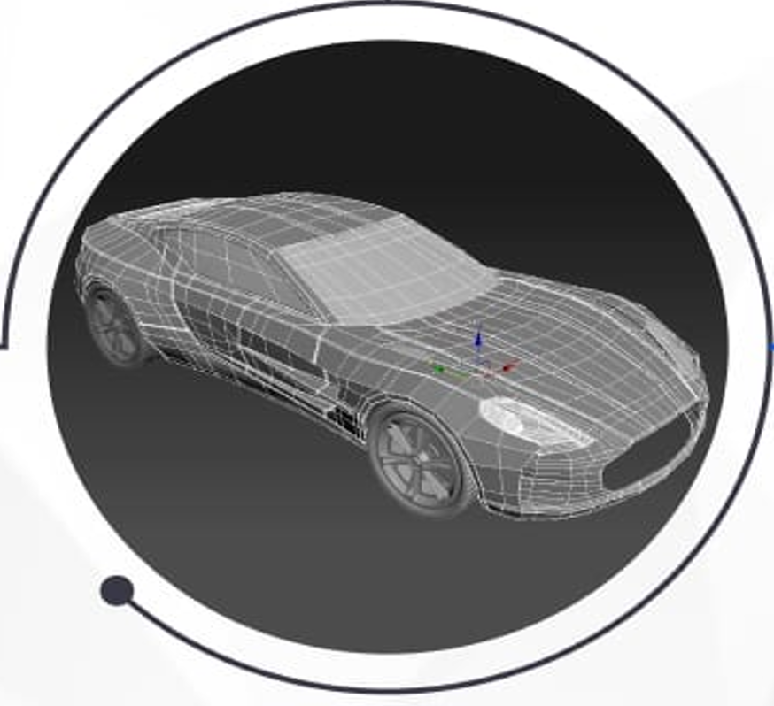
-
-
솔리드 모델링(Solid Modeling)
-
가장 진보적인 방식으로 3차원 형상의 표면 뿐만 아니라 내부의 질량, 체적, 부피 등 여러 정보가 담겨 있으며, 점, 선, 면의 집합체로 되어 있음
-
물체의 정확한 모델링과 분석이 필요한 다양한 분야에서 중요한 역할을 하며, 제품 개발과 시뮬레이션 작업을 지원하는데 사용
-
정확한 기하학적 모델링이 가능하나, 데이터 구조가 복잡해 고사양 컴퓨터를 필요로 하고 작업을 위한 필요 데이터량이 많음

-
3. 3차원 모델링 기술
-
폴리곤 모델링(Polygonal Modeling)
-
가장 전통적인 방식으로 삼각형 또는 사각형의 폴리곤을 구성하는 점, 선, 면의 집합으로 메쉬(mesh)를 제작하는 방식
-
쉽고 직관적이며 표면을 추가하거나 변형하기 쉽다는 장점이 있지만 곡선 표현이 부족하여 엘리어싱(Aliasing) 현상 발생
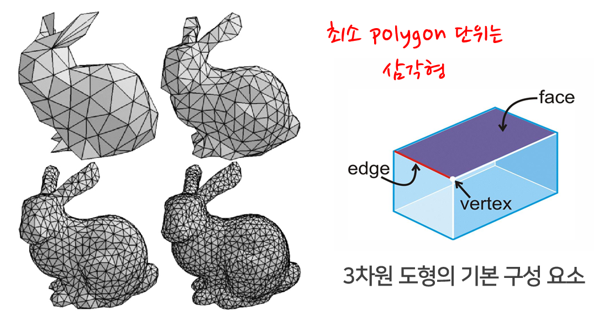
-
-
넙스 모델링(Nurbs Modeling)
-
비정형 유리 B-스플라인(Non-Uniform Rational B-spline)의 약자로 폴리곤의 단점을 보완하기 위해 만들어진 기술로 정밀한 표현 가능
-
수학적으로 선(Curve)을 그려 형태를 잡고 그 형태의 선들을 이용해 면을 구현하는 방식
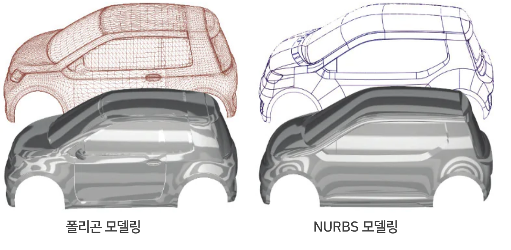
-
-
스컬프팅 모델링(Sculpting Modeling)
-
디지털로 모델을 조각하거나 형성하는 기술로 3차원 모델링 소프트웨어를 사용하여 고해상도 모델을 생성
-
자연스러운 형태와 디테일을 쉽게 추가할 수 있으며 고해상도 모델링에 적합
-
학습 곡선이 높고 복잡한 모델링에는 시간이 많이 소요됨

-
-
모션캡쳐(Motion Capture)
-** 실제 움직임을 디지털 환경으로 전송**하기 위해 사용되는 기술로 센서를 사용하여 인간 또는 동물의 움직임을 기록하고 3차원 모델에 적용 가능
-
실제 움직임을 자연스럽게 적용할 수 있으며 높은 리얼리즘과 효율성을 제공
-
모션 캡쳐 장비의 비용과 복잡성이 있으며 일부 움직임이 정확하게 캡쳐되지 않을 수 있음
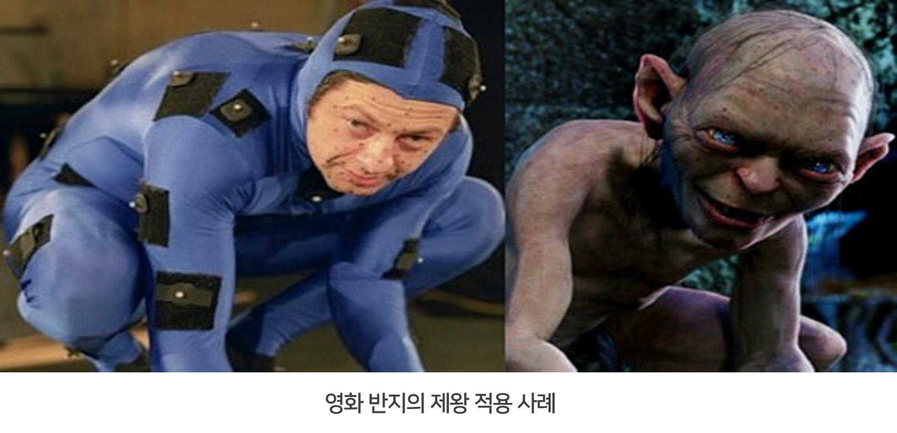
-
-
사진측량(Photogrammetry)
-
여러 각도에서 촬영된 사진을 분석하여 객체의 형태와 표면을 재구성
-
현실 세계의 정확한 모델을 생성할 수 있으며, 비교적 저렴한 장비와 소프트웨어를 사용하여 구현 가능
-
처리 시간이 오래 걸리고, 특정한 조명과 환경에 민감
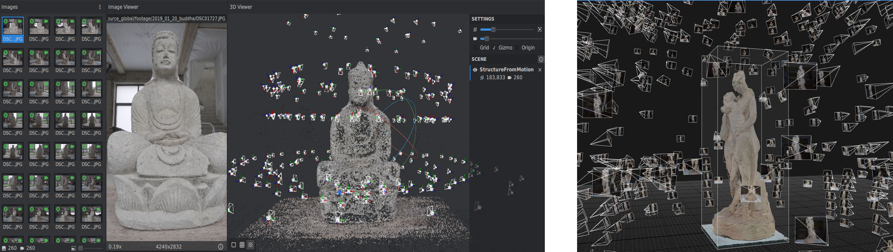
-
4. 랜더링(Rendering), 텍스처링(Texturing), 라이팅(Lighting)
-
랜더링
-
3차원 장면을 바탕으로 컴퓨터를 이용해 사진이나 영상을 만들어내는 과정 또는 그러한 기법
-
3차원 모델에 질감을 입히고 여러 광학 효과를 가미하는 과정
- 색상, 사실성, 음영, 형태 표현, 재질 등의 여러 요소가 고려
-
아키텍처, 디자인 시각화 등 각각의 분야에 따라 서로 다른 기능 및 기술을 활용

3차원 렌더링과 3차원 시각화를 혼용되어 사용되기도 하지만, 3차원 렌더링은 사실 3차원 시각화 프로세스의 마지막 단계임
-
-
텍스쳐링
- 3차원 개체에 이미지, 패턴 및 표면 특성을 적용하는 과정으로 텍스처를 조작하여 거칠기(roughness), 광택(specular), 투명도(opacity) 등의 속성을 제작
-
수동으로 텍스처를 칠하고 생성하는 방법
-
실제 재질을 스캔하여 텍스처로 변환하는 방법
-
컴퓨터 알고리즘이 텍스처를 자동으로 생성하도록 하는 절차적 생성 방법

-
- 3차원 개체에 이미지, 패턴 및 표면 특성을 적용하는 과정으로 텍스처를 조작하여 거칠기(roughness), 광택(specular), 투명도(opacity) 등의 속성을 제작
-
라이트닝
-
장면을 가시화하는 것뿐만 아니라 재질이 정확하게 표시되게 하려면 조명이 필요
-
빛이 표면과 상호하는 매개변수로 조정하고, 조명이 잘못되면 모델의 모양도 이상해짐

-
Blender 설치 및 활용
3차원 모델링 관련 프로그램
1. 3차원 모델링 관련 프로그램
-
프로그램 종류
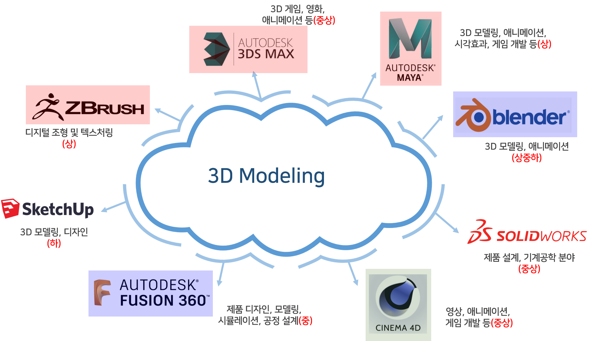
-
Blender 프로그램
-
무료 오픈소스 3차원 컴퓨터 그래픽 제작 소프트웨어로 다양한 기능과 도구를 제공
-
3차원 모델링, 애니메이션, 렌더링, 시뮬레이션 등 다양한 작업을 지원
-
36개 언어 지원, 유연한 OpenGL 기반 인터페이스, 잦은 업데이트가 장점
-
커뮤니티에서 다양한 자료 및 지원 제공
-
사용자 인터페이스가 다른 프로그램과 비교하여 다소 낯설다는 단점
-
-
Blender로 할 수 있는 일
-
3D 모델링(modeling)
- 원하는 모든 입체 형태를 자유롭게 빚고 디자인 가능(폴리곤, 스플라인)
-
렌더링(rendering)
- 3D 물체를 사진처럼 2차원에 담아내는 작업
-
스컬팅(sculpting)
- 점토로 물체를 만드는 것처럼 굴곡을 만들어나가는 조각 기능
-
애니메이션(animation)
- 뼈대를 심고(리깅) 움직임을 주어 캐릭터나 사물이 걷거나 뛰는 등 살아 움직이는 애니메이션 생성
-
시뮬레이션(simulation)
- 물, 불, 연기, 옷의 펄럭임, 부서지는 효과 등 물리 법칙을 적용한 자연스러운 움직임 구현
-
영상 편집 및 합성
- 외부 프로그램 없이도 컷 편집, 자막 추가, 효과음 및 영상 속 특수효과(VFX) 합성
-
3D 프린팅 파일 제작
- 실제로 출력할 수 있는 3D 모형 파일 제작 가능
-
-
Blender 활용 분야
2. Blender 설치
-
시스템 요구사항
-
그래픽 드라이버가 최신 상태인지 OpenGL이 잘 지원되는지 확인 필요
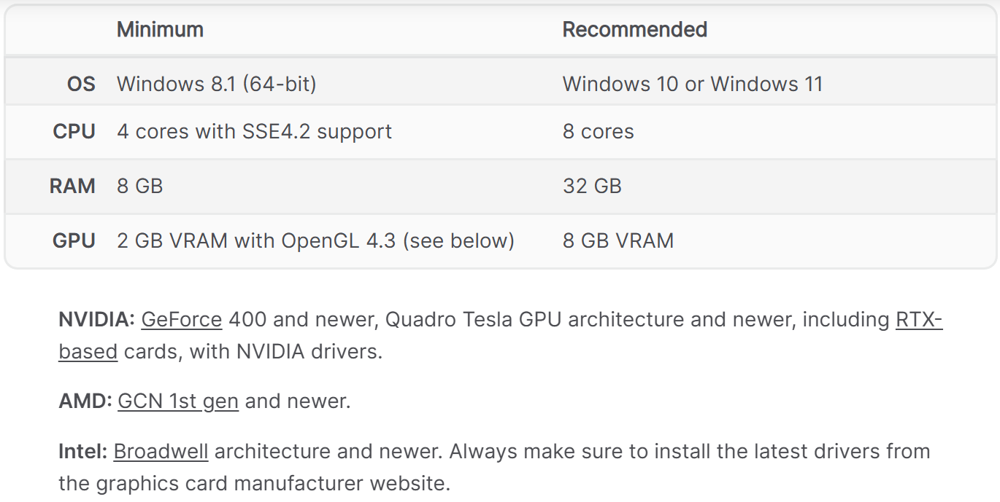
-
-
버전별 특징
-
안정화된 릴리즈(Stable Release)
- 최신 기능을 포함하고 있는 버전으로 3개월 간격으로 업데이트된 버전을 제공
-
LTS(Long Term Release)
- 장기적인 안정성과 호환성을 중시하는 사용자를 위한 버전으로 2년 간의 장기 지원을 제공하여 기업이나 장기 프로젝트에 이상적
-
데일리 빌드(Daily Builds)
- 개발 변경사항들을 가장 발빠르게 적용하여 매일 업데이트 되는 패키지로 철저하게 테스트되지는 않았기 때문에 다소 오류가 포함될 수 있음
-
-
프로그램 설치
-
블렌더 공식 사이트(https://www.blender.org)로 접속한 후, Download 버튼 클릭
-
화면 중간에 있는 Download Blender 버튼 클릭
- macOS, Linux, and other versions 버튼을 클릭하면 운영 체제에 맞는 프로그램 선택해서 다운로드 가능
-
다운로드 받은 파일을 더블클릭하여 실행하고, 별다른 특이사항 없이 기본 옵션으로 다음(Next) 버튼 클릭하여 설치
-
3. Blender 실행
-
스플래쉬 스크린(Splash Screen)
-
블렌더를 실행하면 항상 나타나는 대문 화면으로 버전별 대표 작품과 함께 다양한 항목이 표시
-
화면을 클릭하면 사라지고, 메뉴에서 [Blender] > [Splash Screen]을 실행하여 다시 표기 가능
-
-
옵션 구성
-
New File: 기본화면, 애니메이션, 스컬핑, 시각효과, 영상편집 등 원하는 환경으로 새로운 파일을 생성
-
Open: 원하는 블렌더 파일을 불러오기
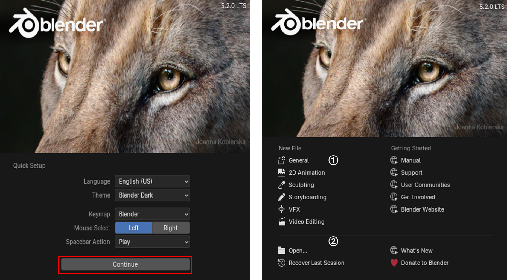
-
4. Blender 설정
-
초기 설정 (Preferences)
- 메뉴:
Edit > Preferences
- 메뉴:
| 항목 | 설정 | 이유 |
|---|---|---|
| Interface > Resolution Scale | 화면에 맞게 1.0~1.25 | 글자 크기 |
| Interface > Translation | English 권장 | 단축키·메뉴명이 자료/검색 결과와 일치 |
| Input > Emulate 3 Button Mouse | 터치패드/2버튼 사용 시 체크 | 휠 클릭 대체 (Alt + 좌클릭) |
| Input > Keymap | Blender (기본) | 교재와 동일 |
| Save & Load > Auto Save | 2분 간격 | 비정상 종료 대비 |
| System > Memory & Limits > Undo Steps | 64 이상 | 실수 되돌리기 |
| Add-ons | Import-Export: glTF 2.0 활성화 확인 | 3장 내보내기 |
설정은 좌측 하단 Save Preferences 로 저장(자동 저장 켜짐이 기본)
-
단위 설정 (공간정보 필수)
-
우측 Properties 편집기 > Scene (원뿔과 구 아이콘) 탭
-
Units: Unit System = Metric, Unit Scale = 1.0, Length = Meters
-
사용자 인터페이스
1. 화면 구성
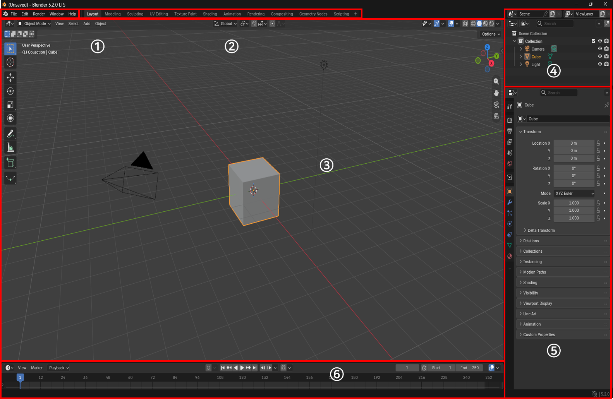
| 편집기 | 역할 |
|---|---|
| 상단 메뉴 | 새 파일 생성, 불러오기, 작업한 파일 저장, 내보내기 |
| Workspace 탭 | 작업별 화면 배치 (Modeling 탭을 주로 사용) |
| 3D Viewport | 모델을 보고 편집하는 핵심 화면 |
| Outliner | 장면 속 오브젝트를 계층(폴더)으로 관리, 보임/숨김 |
| Properties | 선택 오브젝트의 위치·재질·모디파이어·렌더 설정 |
| Timeline | 애니메이션 프레임 |
모든 영역의 경계는 드래그로 크기를 바꾸고, 영역 모서리를 끌어 분할/병합 가능
2. 상단 메뉴 알아보기
-
[Blender] 메뉴
- Splash Screen 창을 다시 실행하여 표시
-
[File] 메뉴
- 새로운 파일을 생성하거나 작업한 파일을 불러올 수 있으며, 작업을 저장하거나 외부 파일을 가져오거나 내보낼 수 있음
-
[Edit] 메뉴
- 작업 되돌리기 Undo와 이전 작업으로 되돌리기 Redo가 있으며 블렌더의 설정을 Preference를 통해 변경
-
[Render] 메뉴
- 이미지를 렌더링 할 수 있는 Render Image와 애니메이션을 랜더링할 수 있는 Fender Animation을 실행할 수 있음
-
[Window] 메뉴
- Workspace를 변경할 수 있으며, 새로운 창을 복제하여 생성할 수 있는 기능들이 있음
-
[Help] 메뉴
- 공식 홈페이지에 있는 메뉴얼과 튜토리얼로 이동할 수 있음
| 기능 | 조작 |
|---|---|
| 시작하기 | |
| 저장하기 | Ctrl + S |
| 불러오기 | Ctrl + O |
| 종료하기 | ’Ctrl + Q` |
3. 인터페이스 변경하기
-
Workspaces에서 인터페이스 변경하기
-
기본적으로 다양한 3D 작업에 편리한 인터페이스를 기본으로 제공하며, 자신에게 적합한 인터페이스를 쉽게 맞춰서 사용 가능


-
-
3D Viewport 패널 알아보기

-
기본 구성 화면
- 화면에 기본적으로 Cube 오브젝트, 조명(light), 카메라(camera)가 표기
-
Header 패널
- 해당 Mode에 필요한 기본 메뉴들이 배치
-
Toolbar 패널([T])
- 기본 Object Mode에 적합한 기능들이 표시
-
Sidebar([N])
- 선택한 오브젝트의 좌표와 크기 등의 정보를 확인하거나 수치를 입력해서 변경할 수 있으며 각각의 탭에도 다양한 정보들이 있음
-
Navigator
- 좌표 기즈모(Gizmo)와 확대, 화면 이동, 카메라와 투시를 변경할 수 있음
-
-
3D Viewport 패널 조작하기
-
패널 분할하기
- 경계선에서 마우스 오른쪽 버튼을 클릭한 다음 표시되는 창에서 [Vertical Split] 또는 [Horizonatal Split]를 실행하면 수평 또는 수직 분할
-
화면 합치기
- 합칠 화면의 경계선에서 마우스 오른쪽 버튼을 클릭하여 [Join Area]를 실행
-
Editor Type 변경하기
-
변경할 패널 상단에서 ‘Editor Type’ 아이콘을 클릭하면 다양한 Edior를 선택할 수 있는 창이 표시
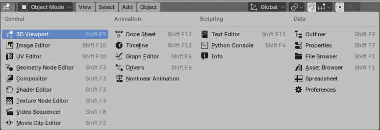
-
-
-
기본 단축키 사용법
-
Screencast Keys 애드온 설치
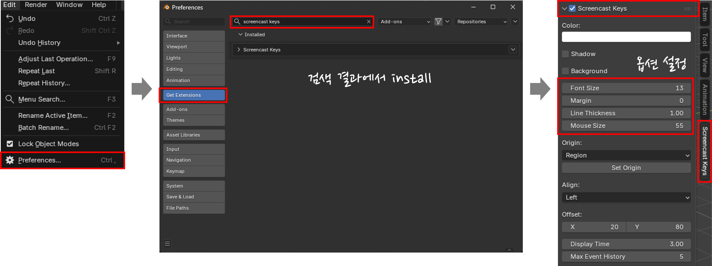
-
4. 뷰포트 조작
-
화면 회전(Orbiting)
-
3D Viewport 에디터 안에서 마우스 휠 클릭한 후 드래그 또는 기즈모(gizmo) 사용
-
블렌더에서 축별 방향 기준은 X축(왼쪽/오른쪽), Y축(정면/후면), Z축(위/아래) 임
-
| 동작 | 조작 |
|---|---|
| 화면회전(1) | 휠 클릭 & 드래그 |
| 화면회전(2) | 내비게이션 기즈모 마우스 왼쪽 클릭 & 드래그 |
| 수직회전(1) | Alt + 휠 클릭 & 드래그 |
| 수직회전(2) | 내비게이션 기즈모 마우스 왼쪽 클릭 |
마우스 왼쪽버튼: MLB, 마우스 오른쪽 버튼: MRB
| 키 | 시점 |
|---|---|
1 | Front (앞) |
3 | Right (오른쪽) |
7 | Top (위) |
0 | 카메라 시점 |
5 | 원근 ↔ 직교 전환 |
Ctrl + 1/3/7 | 반대편 시점 (Back/Left/Bottom) |
숫자패드가 없는 노트북:
Edit > Preferences > Input > Emulate Numpad체크 또는 뷰포트 우측 상단의 기즈모(축 아이콘) 를 클릭
💡 모델링은 직교(Orthographic) 뷰에서 하면 비례가 정확함
Perspective Projection(원근투영): 멀리 있는 객체는 작게, 가까이 있는 객체는 크게 보인 Orthographic Progection(직교투영): 거리에 상관없이 모든 객체가 실제 크기 그대로 표시
-
화면 확대, 축소(Scalling)
-
마우스 휠 또는 숫자키패드를 이용하여 화면 확대 및 축소
-
오브젝트가 여러 개 있을 경우 영역을 선택하고, 설정된 영역에 대해 확대 및 축소 가능
-
Shift+B로 선택 기능을 활성화하고 마우스 왼쪽버튼으로 영역 선택
-
| 동작 | 조작 |
|---|---|
| 화면 확대 | 휠 업 또는 숫자키패드 + |
| 화면 축소 | 휠 다운 또는 숫자키패드 - |
| 부드럽게 확대 / 축소 | Ctrl + 휠 클릭 & 드래그 |
| 전체영역보기 | Home |
| 선택한 오브젝트만 확대해서 보기 | 숫자키패드 . |
| 뷰 파이 메뉴 띄우기 | Esc 키 아래에 있는 억음부호(`) |
5. 화면 이동하기(Panning)
- 마우스 휠 또는 숫자 키패드를 이용하여 화면 이동
| 동작 | 조작 |
|---|---|
| 화면이동 | Shift + 휠 클릭 & 드래그 |
| 위로 조금씩 이동 | Ctrl + 숫자키패드 2 |
| 오른쪽으로 조금씩 이동 | Ctrl + 숫자키패드 4 |
| 왼쪽으로 조금씩 이동 | Ctrl + 숫자키패드 6 |
| 아래쪽으로 조금씩 이동 | Ctrl + 숫자키패드 8 |
오브젝트 다루기
1. 오브젝트 추가·삭제
| 동작 | 단축키 |
|---|---|
| 추가 메뉴 | Shift + A (Mesh > Cube, Plane, Cylinder …) |
| 삭제 | X 또는 Delete |
| 복제 | Shift + D (복제 후 바로 이동, 우클릭/Esc로 위치 취소) |
| 이름 변경 | F2 |
| 숨기기/보이기 | H / Alt + H |
추가 직후 좌측 하단 Adjust Last Operation 패널을 펼치면 크기 · 분할 수 등을 바꿀 수 있음
2. 선택 방법
-
마우스와 키패드를 이용하여 단일선택, 다중선택, 선택반전 등 기본 선택 기능 가능
-
선택한 오브젝트를 활성 오브젝트(Active Object)라 하고, 4가지 선택 툴 제공
| 동작 | 조작 |
|---|---|
| 선택 | 좌클릭 |
| 단일 선택 | MLB |
| 다중 선택 | Shift + MLB |
| 선택 반전 | Ctrl + I |
| 전체 선택/해제 | A / Alt + A |
| 박스 선택 | 빈 곳 드래그 |
3. 변환(Transform) 3종 세트
-
오브젝트 이동(Grab)
-
오브젝트별 중심점(Origin)을 이동시킨다는 의미
-
단축키(G) 또는 사이드바(N)의 [Transform] 탭에서 Location 값을 변경하여 이동
-
-
오브젝트 회전(Rotate)
- 단축키(R)와 사이드바의 [Transform] 탭에서 Rotation 값을 변경하여 회전
-
오브젝트 스케일 변경(Scale)
-
오브젝트 크기를 몇 배로 조정할지 결정할 때 사용하는 용어
-
단축키(S)와 사이드바의 [Transform] 탭에서 Scale 값을 변경하여 회전
-
-
정확한 값 입력: N 패널
-
N키로 사이드바 > Item 탭 > Location / Rotation / Dimensions 에 직접 입력 -
건물처럼 실제 크기가 있는 모델은 Dimensions 값을 확인하며 작업 (예: 10m × 8m × 3m)
-
| 변환 | 키 | 축 고정 | 수치 입력 |
|---|---|---|---|
| 이동 Grab | G | X Y Z | G X 5 Enter → X로 5m |
| 회전 Rotate | R | X Y Z | R Z 90 Enter |
| 크기 Scale | S | X Y Z | S 2 Enter |
핵심 단축키 요약표
| 키 | 기능 | 키 | 기능 |
|---|---|---|---|
Shift+A | 추가 | Tab | 편집모드 |
G/R/S | 이동/회전/크기 | E | 돌출(Extrude) |
X | 삭제 | I | 인셋(Inset) |
Shift+D | 복제 | Ctrl+B | 베벨(Bevel) |
Ctrl+A | 적용 | Ctrl+R | 루프컷 |
Ctrl+Z | 되돌리기 | F | 면 만들기 |
N | 사이드바 | M | 병합(Merge) |
Ctrl+S | 저장 | Ctrl+Shift+Z | 다시 실행 |
Edit Mode
1. 오브젝트 모드 vs 편집 모드
-
오브젝트의 형태를 이루는 점(vertex), 선(edge), 면(face)을 수정할 수 있는 상태
-
점, 선, 면이 모여서 geometry를 이룰 때 메쉬(mesh)라고 함
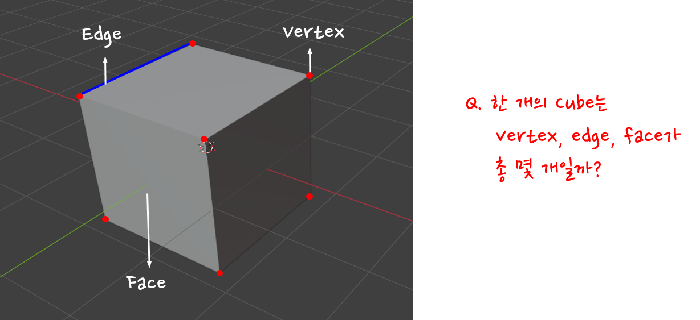
| 모드 | 전환 | 할 수 있는 일 |
|---|---|---|
| Object Mode | 기본 | 오브젝트 단위 이동/회전/크기, 복제, 모디파이어 |
| Edit Mode | Tab | 정점·모서리·면 편집 (모델링의 핵심) |
편집 모드에서 선택 단위 전환:
1정점 /2모서리 /3면 (키보드 상단 숫자)
2. Extrude
-
Edit Mode에서 오브젝트의 요소를 밀어내는 기능
-
요소 선택 후 단축키 E를 클릭하여 점, 선, 면을 노란색 핸들을 드래그하여 밀어냄
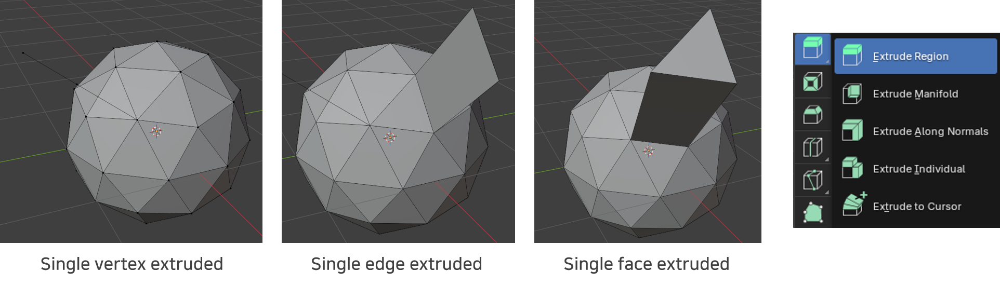
3. Bevel
-
오브젝트의 각진 부분을 다듬는 기능으로 Bevel Vertices와 Bevel Edges 기능으로 구분
-
오브젝트의 Edge 또는 Face를 선택한 후 노란색 핸들을 MLB 클릭하여 드래그
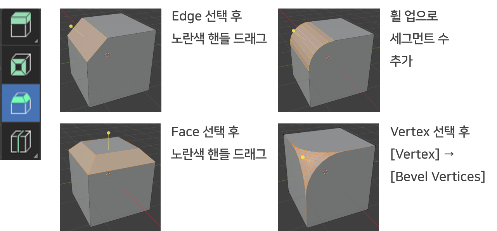
4. Loop Cut
-
종이를 길게 오려내듯이 Face를 연속적으로 나누는 기능으로 표면이 연속적으로 흘러가는 모델링에서 유용하게 사용
-
단, Face를 이루는 Vertex가 4개일 때만 Loop Cut 사용 가능
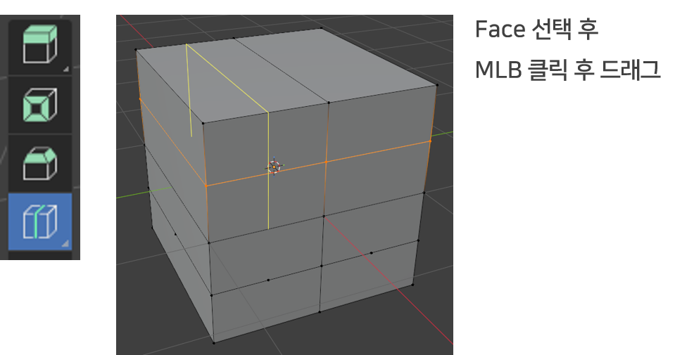
3D 모델링
3D 모델링 이론 및 실습이론
2D graphics
- 점, 선, 면으로 이루어짐
- 높이에 대한 개념이 없음
- X, Y축으로 위치를 표시
- 파워포인트에서 사각형 등 작업
3D graphics
- 점, 선, 면으로 이루어짐
- 높이 개념이 추가됨
- X, Y, Z축으로 위치를 표시
X, Y, Z 축을 쉽게 알아보는 법
- 2D 그래픽에서는 가로가 X축, 세로가 Y축
- 3D 그래픽에서는 화면 회전이 많아 X, Y, Z축을 한 번에 알아채기 어렵다
- 축의 색을 RGB 순서로 기억하면 쉽다
| 색 | 축 |
|---|---|
| R: Red | X |
| G: Green | Y |
| B: Blue | Z |
X, Y, Z 축 문제
1칸을 1로 봤을 때,
- 빨간 점의 X좌표는 4
- 빨간 점의 Z좌표는 2
- 빨간 점의 Y좌표는 0
문제 1
빨간 점의 X, Y, Z좌표는?
문제 2
빨간 점의 X, Y, Z좌표는?
문제 3
빨간 점의 X, Y, Z좌표는?
문제 4
빨간 점의 X, Y, Z좌표는?
문제 5
빨간 점의 X, Y, Z좌표는?
문제 6
빨간 점의 X, Y, Z좌표는?
문제 7
빨간 점의 X, Y, Z좌표는?
Perspective vs Orthographic
- perspective: 입체적인
- 멀리 있는 물체는 작게, 가까운 물체는 크게 보이는 등 입체감이 있음
- orthographic: 직교투영. 입체적이지 않은
- 거리와 상관없이 물체의 크기가 똑같이 느껴진다
- Top view, Front view, Right view 등에서 사용
- 단축키: 숫자키패드
5
오브젝트의 이동, 회전, 크기
- 이동:
G- 축 따라 이동:
G키를 누른 후 원하는 축에 따라 (X/Y/Z) - Z축으로의 이동은 제한하고 X, Y축으로만 이동할 때는
Shift+Z
- 축 따라 이동:
- 회전:
R- 축 기준 회전:
R키를 누른 후 원하는 축에 따라 (X/Y/Z)
- 축 기준 회전:
- 크기:
S- 축 따라 크기 조정:
S키를 누른 후 원하는 축에 따라 (X/Y/Z)
- 축 따라 크기 조정:
Edit mode
| 기능 | 단축키 |
|---|---|
| Edit mode / Object mode 변경 | Tab |
| vertex(점) 수정 | 1 |
| edge(모서리, 선) 수정 | 2 |
| face(면) 수정 | 3 |
| Extrude(돌출) | E |
| bevel(베벨, 모따기) | Ctrl + B |
모깎기: 모따기한 후 마우스 휠
Modeling(모델링)
- 빌딩 등의 겉 모습
Texture(텍스처)
- 빌딩 등 model의 겉면 이미지
Light(조명)
- 모델에 빛을 줘 밝기와 그림자 효과를 준다
Render(렌더)
- model, texture, light, 카메라 등을 모두 계산해 최종 이미지를 만들어 내는 것
FBX
- FBX(FilmBoX)
- 3D 그래픽 자료 호환의 사실상 표준
- 다른 프로그램으로 자료를 넘길 때 FBX로 export 한 파일을 넘겨준다
실습: 건물 만들기
- 건물은 직육면체를 활용
- 텍스처는 pixabay.com에서 다운로드해 사용
- 검색어:
building facade
- 검색어:
활용 기술: 3D 모델링, 조명, 재질, UV / 텍스처, 렌더링
실습:
실습: 책상 만들기 1
- mesh들을 조합하여 책상 만들기
- 텍스처는 pixabay.com에서 다운로드해 사용
- 검색어:
wood texture
- 검색어:
활용 기술: 3D 모델링, 조명, 재질, UV / 텍스처, 렌더링
실습:
실습: 책상 만들기 2
- Edit 모드를 이용해 1개의 mesh로 책상 만들기
- 텍스처는 pixabay.com에서 다운로드해 사용
- 검색어:
wood texture
- 검색어:
활용 기술: 3D 모델링, 조명, 재질, UV / 텍스처, 렌더링
실습:
loop cut: 면을 나눌 때 사용. 단축키: ctrl + R
실습: 책상 만들기 3
- 하나의 mesh에 다양한 재질 입히기
활용 기술: 재질
실습:
4. 3D 모델링 이론 및 실습이론
애니메이션
- 키프레임(keyframe)
- 동영상을 만드는 모든 프로그램에서 사용
- 동작을 정의하는 가장 쉬운 방법
- Interpolation
- 0초에 A지점을 키프레임으로 지정하고,
- 3초에 B지점을 키프레임으로 지정하면,
- 0~3초 사이의 중간 지점을 자동으로 생성해서 이동하는 것처럼 만들어줌
- 주사위가 굴러가는 동영상
- 이동과 회전 키프레임이 적절하게 설정되어야 자연스럽게 보임
도면 3D
평면도 모델링
- 이미지(평면도) 위에 모델링
활용 기술: 3D 모델링, 조명, 재질, 렌더링
평면도 모델링
평면도 샘플
평면도 제작 실습
1/2
2/2
6. 도면 3D
재질 & texture
재질
모델이 주는 느낌. 플라스틱인가, 금속인가?
- 물체의 고유색(빨간색, 파란색, 노란색, 갈색): base color
- 표면의 거칠기(거친 정도가 0이면 거울처럼 된다): roughness
- 금속인 정도(금속인 정도가 1이면 금속처럼 반짝인다): metallic
PBR(Physically Based Rendering)
- 3D 그래픽 애니메이션을 만드는 디즈니에서 상업화한 기술
- 3D 프로그램마다 재질을 표현하는 방법이 다 달라 옛날 작품 수정이 어려움
- 재질이 보여지는 방법을 물리적인 속성을 이용해 표현(색, 금속성, 거칠기 등)
- 통일된 표현법
texture(텍스처)
- 빌딩 등 model의 겉면 이미지
texture(텍스처) 입히는 방법
직접 그리기
사진 찍어 각 면에 붙이기
UV
- 정육면체를 펴서 파워포인트로 주사위 텍스처 만들기
normal(노말)
- 살짝 긁힌 상처, 홈 등을 표현
- 자잘한 상처를 전부 모델링하면 모델이 매우 복잡해져 처리 속도가 느려짐
- ’이 부분은 상처 난 것처럼 살짝 파인 부분이다’를 표현하는 가장 빠른 처리 방법
- 그림자로 모델의 상처 부위 깊이를 표현
재질 예시
재질 실습
PBR 기본 설정값: base color, roghness, metalic 설정
텍스처 직접 그리기
텍스처 입히기 - 주사위 텍스처
normal map(노말맵) - 실사같은 나무 상자
Light
Light(조명)
- 빛을 이용해 밝기와 분위기 조정
- 빛을 이용해 생기는 그림자는 현실감을 주는 중요한 요소
point 조명
- 전구 느낌의 조명
- 조명이 있는 곳은 밝고 주변은 점점 어두워짐
sun 조명
- 태양 느낌의 조명
- 위치는 상관없고 방향만 중요
- 화면 전체에 일정한 밝기 제공
Spot 조명
- 공연장 스포트라이트 느낌의 조명
- 빛이 퍼지는 모양을 고깔 모양으로 그려볼 수 있다
- 주목받는 대상을 강조하기 위해 사용
Area 조명
- 창을 통해 들어오는 빛이나 TV, 모니터에서 퍼져 나오는 빛을 표현
- 빛이 뒤로 퍼지지 않는다
조명 실습
8. Light
Render 실습
렌더링 실습
재료 다운로드

렌더 기본
랜디를 이용한 fog 렌더링
9. Render 실습
참고자료
blender 공식 홈페이지
도서
- 이토록 쉬운 까망고니의 블렌더 트레이닝 / 김수현 / 루비페이퍼 / 2023
- 블렌더 3D / 박범희 / 성안당 / 2023
- 실무 건축 인테리어를 위한 블렌더 3D / 최인재 / 성안당 / 2024